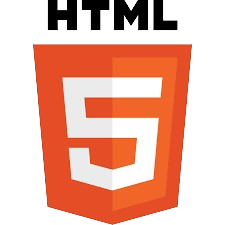

Ethan Mason took an interest in the art some call "programming" at an early age. Beginning with the simple magics of block-based programming, he developed his foundation in elementary school. Later on, Ethan continued his journey in middle school, where he became familiar with Python, HTML, and CSS, though he was only scratching the surface. The point where Ethan really fell in love with the secret languages of programming was in high school, where he learned Java and reinforced his Python skills. Here, his abilities took their first big step, and Ethan was able to wield his skills in a more sophisticated manner.
After graduating from high school, Ethan took his talents to the University of Texas, reknowned for its impressive pedigree in computer science. Here, he polished his programming skills in Java, Python, and C. The turning point for Ethan at this stage was that he realized there was still so much more hidden magic beneath the surface. Courses such as Data Structures and Computer Architecture revealed that the power of programming derived from various complicated instruments within the computers he'd been using. He was shocked to learn that so much eloquence and energy had been right under his nose the whole time.